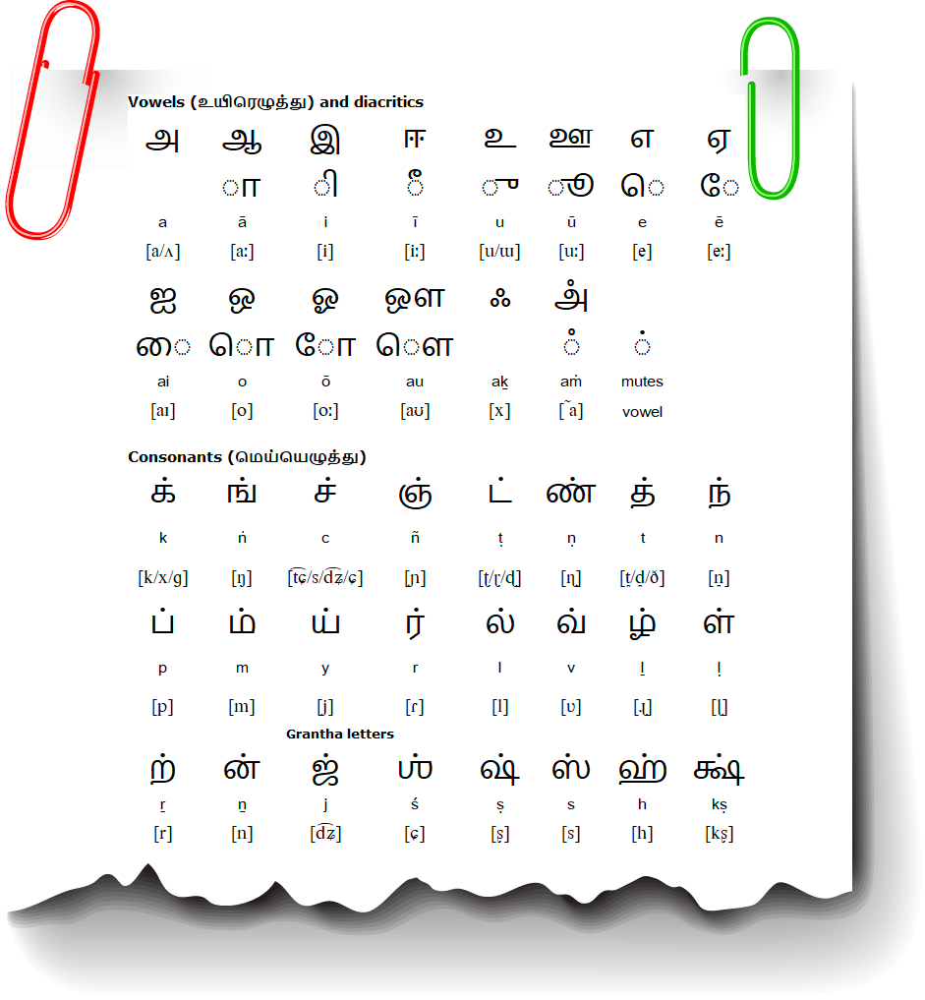
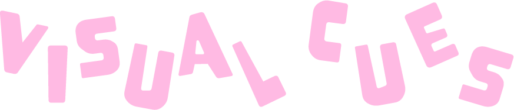
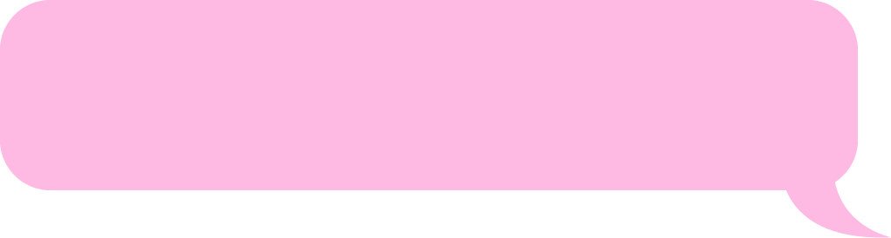
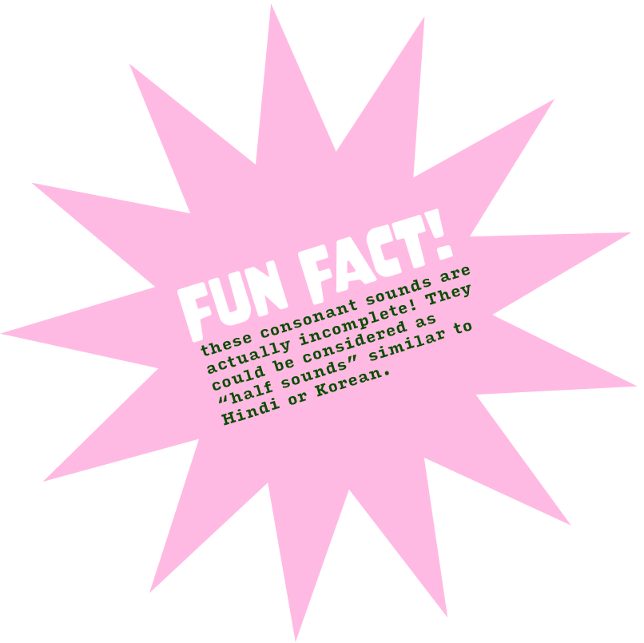
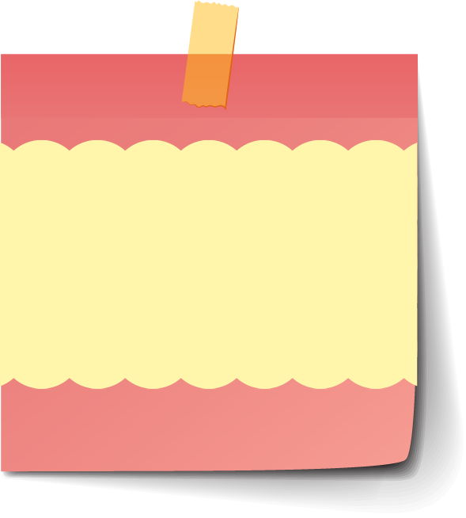
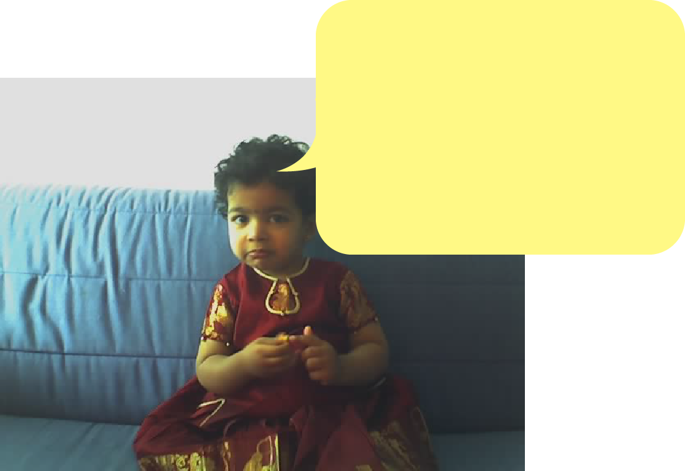

Tbh, I haven't quite learnt the script formally myself, so this is new to me as well. Step by step let's go!
Tamil is one of the oldest languages in the world (from around 500 BCE!). As a result, it has gone through multiple changes over time. Right now, we use Modern Tamil, and the current script is a derivative of the Chola-Pallava script developed during the Pallava dynasty around 275-897 AD), although it has been changed to make it easier to typeset.
Something that is quite interesting about this language is that the way it is spoken is COMPLETELY different from how it is written.

The alphabet was originally written on palm leaves. As a result, the letters are made up mainly of curved strokes which did not rip the leaves.
There are three parts to the Tamil script:
Vowels
Consonants
Combination of consonant and vowel
Vowels
அ a - Alexa
ஆ aa - Father
இ i - in
ஈ ee - fleet
உ u - put
ஊ oo - shoot
எ e - tell
ஏ ae - Place
ஐ ai - Pie
ஒ o - over
ஓ O - Boat
ஔ ou - Slouch


"அ" looks like a lowercase "a"!

imagine putting a tail on "அ". It now has a longer body and hence a longer sound, resulting in "ஆ"
"ஈ" looks like "ii"
"உ" is written like "2", the prononciation is the same!
"எ" looks similar to an italicizes "a". The sound is also elongated like the a.
"ஐ" looks like a butterfl"y" - remember this pronounciation!
"ஒ" looks like an abstract drawing of a n"o"se ;;
"ஔ" looks like an elephant, it lets out the sound "ouuuu"!
Consonants
க் "k" - kite
ங் "ng" - mingle
ச் "ch"/"s" - charm
ஞ் "ng" - syringe
ட் "t" - tall
ண் "nn" - cinderella
த் "th" - their
ந் "n" - pan
ப் "p"/"b" - paralyse
ம் "m" - mango
ய் "y" - yacht
ர் "r" - ring
ல் "l" - little
வ் "v" - vessel
ழ் "zh" - (tongue retracted)
ள் "l" - marble
ற் "tr"- metric
ன் "n" - sin

Highly recommend checking this video out for revising above info and combining consonants!


I hope you guys learnt more about my mother tongue! It is a beautiful language and there is much to explore. The script may seem complex, but the more you see it, the more familiar it gets. Furthermore, Tamil grammar is actually really easy!